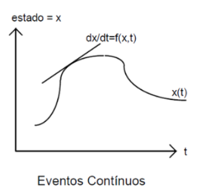
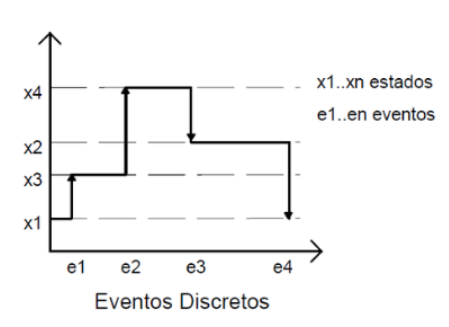
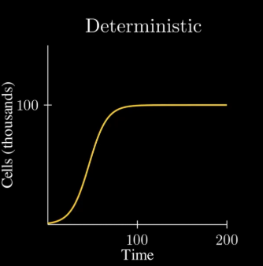
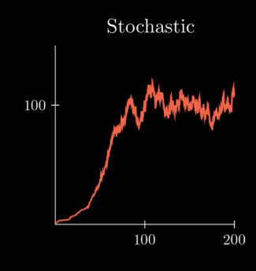
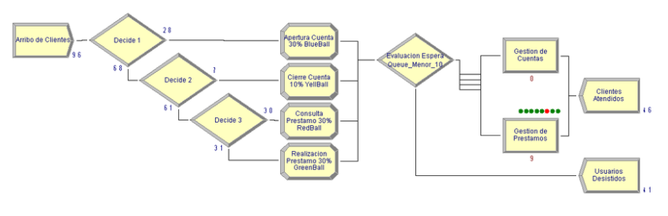
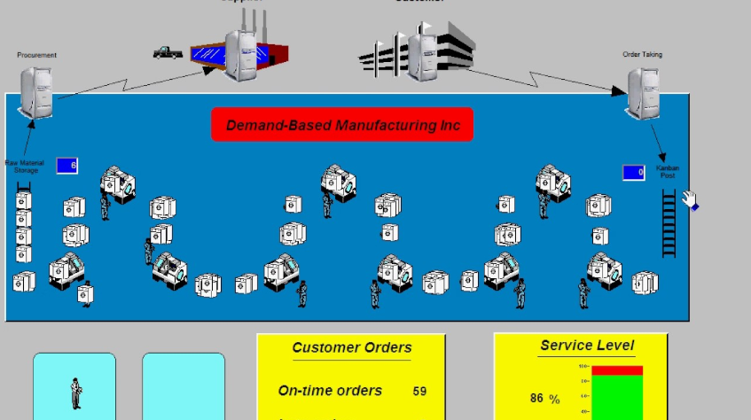
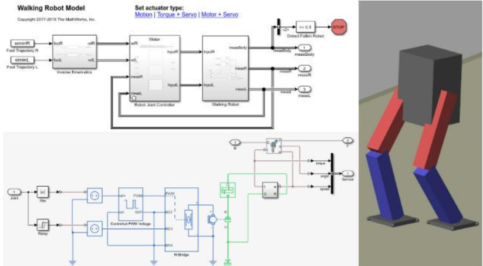
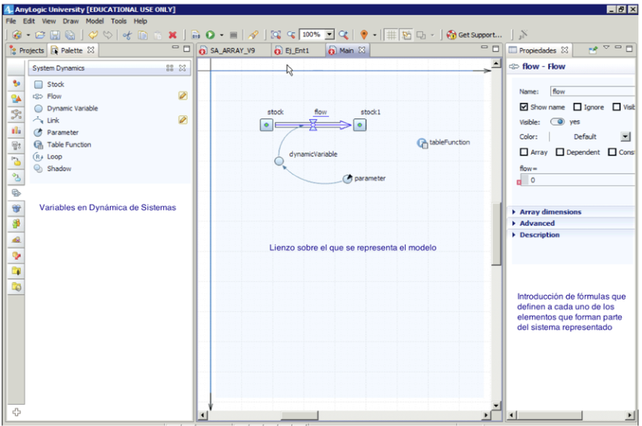
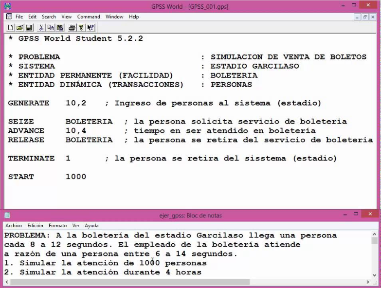
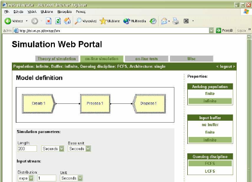

¡Descubre cómo recrear el mundo real en una computadora! 🖥️
Materia: 070183 - Simulación de Sistemas
Docente: Ing. Samuel Quispe Mamani
Fecha: 28 de agosto del 2025
Código: 202210739
Código: 2022107050
Código: 2022107017
Código: 2022107041
Código: 2022107005
Código: 2022107010
Es como crear una copia virtual de algo real (una fábrica, un hospital, una ciudad) en la computadora para poder experimentar sin riesgos.
• SimCity: Simulas una ciudad completa
• Flight Simulator: Simulas volar un avión
• FIFA: Simulas un partido de fútbol
💡 ¿Por qué es útil? Porque puedes probar cosas sin gastar dinero real o causar problemas reales.
Un conjunto de cosas que trabajan juntas
Ejemplo: Una escuela 🏫
• Estudiantes 👥
• Profesores 👨🏫
• Aulas 🚪
• Horarios ⏰
Una versión simplificada del sistema
Ejemplo: Plano de la escuela 📐
• Solo lo importante
• Más fácil de entender
• Se puede modificar
🎯 Relación: El sistema es la realidad completa, el modelo es la versión que podemos estudiar.
Los cambios son suaves y constantes
Como: Llenar una piscina 🏊♂️
• El agua sube gradualmente
• No hay saltos bruscos
• Siempre está cambiando
Los cambios ocurren en momentos específicos
Como: Cola del banco 🏪
• Llega una persona
• Se atiende a alguien
• Eventos específicos
📱 Analogía: Continua = Video de YouTube, Discreta = Fotos en Instagram
Siempre da el mismo resultado
Como: Una calculadora 🧮
• 2 + 2 = 4 (siempre)
• Predecible
• Sin sorpresas
Incluye elementos aleatorios
Como: Juego de dados 🎮
• Resultados variables
• Incluye suerte
• Más realista
Estáticos: Como una foto - un momento específico
Dinámicos: Como una película - cambia con el tiempo
Te permite ver el futuro antes de que pase
¿Qué pasará si...?
¿Cuál es la mejor forma?
Probar sin riesgos
Entender cómo funciona
• McDonald's: ¿Cuántas cajas necesito en hora pico?
• Netflix: ¿Qué servidores necesito para una nueva serie?
• Hospital: ¿Cuántos doctores para emergencias?
Como diferentes apps para diferentes propósitos:
Para: Fábricas, servicios
Como: Minecraft para ingenieros
Para: Manufactura
Como: Legos digitales
Para: Ingeniería, energía
Como: AutoCAD científico
Para: Todo un poco
Como: Suite de Office
Para: Enseñanza
Como: Calculadora avanzada
Para: Academia
Como: Lenguaje de programación
Simulan su cocina para saber:
• ¿Cuántas freidoras necesitan?
• ¿Qué tan rápido deben cocinar?
• ¿Cuánto tiempo esperará el cliente?
En Lima simularon el tráfico para:
• Reducir el tiempo en rojo 🔴
• Sincronizar semáforos ⏰
• Menos contaminación 🌱
Paneles solares:
• ¿Cuántos necesito? ☀️
• ¿Dónde ponerlos? 📍
• ¿Cuánta energía producirán? ⚡
Hospitales:
• ¿Cuántas camas en emergencias? 🛏️
• ¿Cuántos doctores de guardia? 👩⚕️
• ¿Cómo manejar una epidemia? 🦠
🌍 Durante COVID-19: Los hospitales usaron simulación para prepararse y saber cuántas camas ICU necesitarían.
Como una receta de cocina, hay que seguir el orden:
¿Qué queremos solucionar exactamente?
🎯 Ejemplo: "Los clientes esperan mucho en el banco"
Dibujar cómo funciona el sistema
📝 Ejemplo: Diagrama del banco con cajas y colas
Programar el modelo
💻 Usar Arena, ProModel, etc.
¿Funciona bien? ¿Es realista?
✅ Comparar con la realidad
Planear qué vamos a probar
🧪 "¿Qué pasa con 2, 3 o 4 cajas?"
Correr el programa y recoger datos
⏱️ Dejar que la computadora trabaje
Interpretar qué significan los números
📊 Hacer gráficas y comparaciones
Decidir qué hacer
💡 "Necesitamos 3 cajas en hora pico"
No hicimos experimentos, sino que estudiamos lo que otros científicos han descubierto.
Buscamos libros y artículos importantes sobre simulación
Estudiamos las ideas principales de cada autor
Vimos en qué coinciden y difieren los autores
Combinamos todo en una explicación coherente
🎯 Objetivo: Entender la simulación como disciplina científica, no hacer simulaciones nosotros.
Estudiamos las ideas de los mejores expertos en simulación del mundo
En qué están de acuerdo todos los expertos
En qué tienen opiniones distintas
🎯 Resultado principal: La simulación es una ciencia madura con bases sólidas y múltiples aplicaciones.
TODOS los autores coinciden:
• Sistema = Conjunto de cosas que trabajan juntas
• Modelo = Versión simplificada para estudiar
• Bertalanffy (1968): "Padre de la teoría de sistemas"
• Barceló (1996): "Los modelos son herramientas de análisis"
• García Dunna (2013): "Los modelos permiten experimentar"
💡 Conclusión: Hay un consenso total sobre estas definiciones básicas.
Todos los expertos usan la misma clasificación:
• Continua 🌊
• Discreta 🎯
• Determinística 🔒
• Estocástica 🎲
• Estática 📷
• Dinámica 🎬
• Híbridas 🔄
• Multimétodo 🌟
🎯 Evolución: Los tipos clásicos se mantienen, pero aparecen enfoques híbridos.
Arena & ProModel
Líderes consolidados
Matlab/Simulink
Especial para energía
AnyLogic
La nueva generación
GPSS & SIMAN
Para aprender
Plataformas Web
Simulación en la nube
Interfaces visuales
Más fácil de usar
🚀 Tendencia: Los software evolucionan hacia ser más visuales y fáciles de usar.
| Autor/Año | Su Aporte Principal | Enfoque |
|---|---|---|
| Barceló (1996) | Metodología rigurosa | Teórico |
| García Dunna (2013) | ProModel práctico | Aplicado |
| Torres Vega (2016) | Arena en la práctica | Software |
| Law & Kelton (2015) | Marco metodológico | Integral |
| Cardozo (2019) | Energía renovable | Especializado |
| Maldonado (2010) | Sistemas complejos | Conceptual |
En qué todos están de acuerdo:
• Definiciones básicas
• Pasos metodológicos
• Importancia para decisiones
En qué difieren:
• Enfoque (teórico vs práctico)
• Software preferido
• Áreas de especialización
Cómo ha cambiado:
• De académico a profesional
• Software más amigable
• Aplicaciones más diversas
Hacia dónde va:
• Métodos híbridos
• Inteligencia Artificial
• Simulación en tiempo real
🎯 Mensaje clave: La simulación es una ciencia madura pero sigue evolucionando.
Consenso total: los modelos son herramientas indispensables para estudiar sistemas complejos.
La simulación se adapta a cualquier problema: continua, discreta, determinística, estocástica.
Ya no es solo una herramienta técnica, sino una estrategia para tomar mejores decisiones.
El software evoluciona hacia interfaces más amigables y capacidades multimétodo.
Todos los expertos coinciden en los pasos básicos de un proyecto de simulación.
La simulación seguirá creciendo con IA, realidad virtual y computación en la nube.
La simulación es la herramienta del futuro para entender y mejorar nuestro mundo complejo.